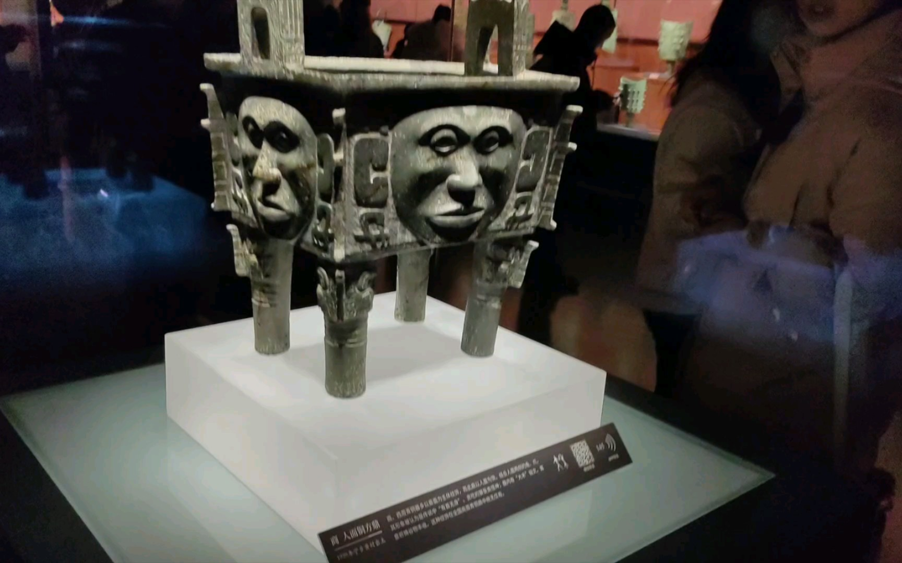

湖南博物馆



九点到十二点，十二点到十六点，分两场
就在民宿旁边，走过去十分钟。
一定要预约，刷身份证进场。
普通陈列免费，特殊展览和临时展览几十上百（这里面包含普通陈列）。
看普通陈列就够了，抢不到普通陈列的票再考虑买票进去。
不过我们肯定能抢到，这个没事。
讲解机器30一个人，头戴式耳机，所以没法租一台大家用，我租过，说实话体验很差，展品不全，而且说的内容很少。
AR眼镜，90一个人，也没法大家用，我当时去还没有。
人工讲解50一个人，拼团好像能便宜具体价格没问。
里面说是有志愿者讲解，但很少，我上次去一个也没看见。
我建议还是需要讲解的，不然就是进去散步的。
要讲解的话，先定好时间然后我去找人。
这里要走的路挺多的，可以空手去，反正民宿很近。